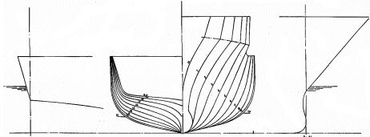
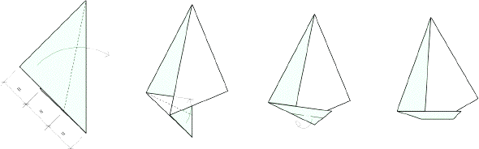

Stratégie - Organisation - Management
Définir et formuler un projet, Identifier les priorités stratégiques, Planifier, communiquer...
En savoir plusAligner l’organisation interne, Orienter l’organisation interne vers le client...
En savoir plusAméliorer les performances managériales de l'encadrement, Gérer la carrière des managers...
En savoir plusAligner l’organisation interne, Orienter l’organisation interne vers le client...
En savoir plusAccompagner les équipes de Direction pour :


Les pratiques managériales en Afrique ont fait l’objet de rares ouvrages en dehors de l’Afrique du Sud où le concept d’« African Leadership » a été largement développé. L’évaluation 360° des pratiques managériales en Afrique est une pratique encore plus rare, du moins dans la partie francophone. C’est ce que nous avons récemment réalisé dans un pays de l’Afrique équatoriale et dont nous voulons témoigner aujourd’hui.
Dans le cadre de la réorganisation d’une entreprise de transport de plus de 1000 personnes, la direction du groupe décide de mettre en place une nouvelle culture orientée vers la satisfaction du client et la performance. Ce changement implique de pouvoir s’appuyer sur des managers capables d’engager et d’accompagner les équipes vers l’évolution souhaitée. La nécessité de remettre en cause les pratiques managériales existantes conduit au lancement d’une évaluation 360° du top et middle management avec l’outil SPM®.
Une cinquantaine de managers assurant les fonctions de directeur général, directeurs et chefs de départements ont été évalués sur une période de quatre mois, mobilisant plus de 300 personnes au total, hiérarchiques, collatéraux et subordonnés compris.
A la fin des deux vagues d’évaluation, nous avons pu observer trois effets notables. Tout d’abord, la remise en cause recherchée a été obtenue auprès de la plupart des managers évalués. Lors des entretiens de restitution, beaucoup de managers ont fait spontanément part d’une « découverte de soi », d’une « prise de conscience », d’un « déclic personnel », voire d’un « électrochoc », déclenché par l’effet miroir du feedback reçu et renforcé par le fait que l’exercice était le premier du genre. Ces remises en cause individuelles ont amené un certain nombre d’entre eux à partager, de leur plein gré, les résultats de leur évaluation avec leur supérieur et leurs collaborateurs. Dans la culture africaine où le style de leadership est directif ou paternaliste, de tels comportements constituent en soi un grand progrès, nécessitant de remettre en cause les valeurs ancestrales de respect du chef et des anciens.
Les deux autres bénéfices de l’exercice sont plus spécifiquement dus, de notre point de vue, au choix du SPM® parmi la large gamme d’outils 360° existants sur le marché. L’outil SPM® comporte en effet un aspect pédagogique indéniable. Grâce à la soixantaine de pratiques managériale évaluées au travers du questionnaire, certains managers ont littéralement découvert les différentes dimensions du management et du leadership. Cela a été encore plus vrai pour les managers maîtrisant une expertise spécifique comme la comptabilité ou les aspects juridiques. Lors de la restitution des rapports d’évaluation, tous les entretien ont ainsi d’abord porté sur l’explication des bonnes pratiques managériales sous-tendues par chacune des questions posées, avant même de traiter les pratiques existantes.
Enfin, l’outil SPM® nous a permis de construire un référentiel de management sur base des huit facteurs de management porté par le modèle, sur lequel s’alignera le futur système d’appréciation des managers. Le prochain exercice d’évaluation 360° permettra ainsi de suivre la progression des capacités managériales, en parfaite cohérence avec les dispositions de gestion de la performance.
Une fois le souffle de l’exercice retombé, il nous faut maintenant assurer son suivi systématique auprès de chaque manager, afin que les axes de développement identifiés à l’échelle individuelle et les engagements pris pour les mettre en œuvre ne restent pas lettres mortes, avant que le nouveau système d’appréciation, de reconnaissance et de rémunération ne prenne le relai.
Rédigé par Marc Roure pour Open’Act le 9 juin 2010
Quoiqu’en disent les spécialistes qui ont naturellement tendance à défendre leurs chapelles, les différentes démarches d’amélioration de la performance existantes (Lean, 6 Sigma, TQM, TPM, BPM, SPM, qualité ISO, etc.) présentent chacune des avantages et des limites. Il faut savoir choisir la plus appropriée en fonction de la problématique, du contexte, des enjeux et des objectifs poursuivis, en évitant de se contenter de suivre la mode.
La plupart de ces approches comportent trois « étages » :
Face à une problématique donnée, il convient donc de sélectionner la bonne démarche et les bons outils, selon que l’on veuille se concentrer en priorité sur les coûts, les délais ou la qualité. Il est en outre possible de combiner les approches. Dans une démarche de type Lean-Sigma, certains préconisent par exemple de commencer par simplifier un processus « avec du Lean » avant de le maîtriser « par le 6 Sigma », en combinant ainsi intelligemment deux approches concourant à la même finalité : l’amélioration de la performance. Au préalable, on aura eu la sagesse de refondre la cartographie des processus ou mieux la supply chain, afin d’identifier les processus à maîtriser en priorité. Ainsi le pragmatisme doit prévaloir, ce qui ne veut pas dire qu’il faut faire systématiquement un « mix » des approches.
En ce qui concerne le facteur humain, clé du succès, la planification des démarches d’amélioration «packagées» (ex : un projet Lean, Six Sigma, TPM ou de certification ISO), intègre de manière très opérationnelle les ingrédients de la fameuse « conduite du changement ». Ces ingrédients sont d’ailleurs gravés dans les principes fondamentaux de l’Excellence ou de la qualité : engagement de la Direction, information, sensibilisation, formation, implication, responsabilisation et reconnaissance du personnel, transfert de savoir-faire à des relais internes (Black Belts, Lean experts, animateurs de groupes de progrès, etc.). La prise en compte du facteur humain me semble donc être un principe universel au cœur de toutes les démarches sérieuses visant l’amélioration «durable» de la performance. Que les entreprises négligent ce facteur lors de la mise en œuvre de ces démarches est une autre histoire, hélas bien réelle.
Auditeur, expert ou consultant? L’entreprise ne discerne pas toujours clairement les frontières des différents corps de métier qui lui délivrent des prestations intellectuelles pour l’aider à atteindre ses objectifs, telles que l’audit, le diagnostic, l’expertise, la consultance (ou le conseil) ou même le coaching.
L’audit au sens large consiste à recueillir, de manière indépendante, des informations pour déterminer dans quelle mesure une organisation satisfait aux exigences d’un référentiel -norme externe ou directive interne- applicable dans un domaine donné, par exemple dans le domaine financier (p. ex: exigences issues du nouvel accord Bâle II sur les risques bancaires), de la qualité (p. ex: norme ISO 9001), mais également de la sécurité, de l’hygiène, du social ou de l’environnement (cf. normes nationales, CE et ISO existantes). L’audit interne a pour finalité de donner à la Direction d’une organisation l’assurance sur le degré de maîtrise de ses opérations, en évaluant son système de gestion des risques, de contrôle et de gouvernement d'entreprise, ainsi que de lui donner l’occasion d’en améliorer l’efficacité.
Il n’est pas rare de confondre audit et diagnostic: si l’audit se réfère à un référentiel applicable pour identifier des écarts et s’interdit de prodiguer des conseils à l’entreprise, le diagnostic se réfère aux bonnes pratiques existantes et à la stratégie de l’entreprise pour en identifier les forces et les faiblesses internes, et délivrer des recommandations d’amélioration.
L’acception du terme «auditeur» est souvent réduite au seul domaine comptable et financier. En revanche, l’appellation «expert» est plus largement galvaudée, car tout le monde est expert de quelque chose. L’expert est avant tout «celui qui sait». Il détient une «expertise», qui est la somme de ses connaissances techniques, de ses compétences et ses expériences acquises dans un métier, un domaine ou un secteur particulier, comme la gestion de production dans l’industrie manufacturière. C’est lui qui analyse la situation et propose la solution, par exemple pour maîtriser le risque de pollution par le cuivre de tranches de semi-conducteurs en technologie aluminium. L’expert intervient sur le métier même de l’entreprise. Au final, l’expert délivre un rapport sur un sujet donné après des entretiens et des observations sur le terrain et délivre ses conclusions et ses recommandations, comme peut le faire une commission d’enquête aéronautique ou un expert dans le domaine psychiatrique sur demande du tribunal près duquel il est assermenté.
Le consultant apporte d’abord et avant tout une méthode pour aider à l’organisation à trouver sa voie, que ce soit pour élaborer une stratégie, définir un système de gestion, mettre en place de nouvelles dispositions organisationnelles, améliorer des pratiques existantes ou résoudre un problème, dans des domaines aussi divers que le management, la production, les ventes, la communication, les ressources humaines, les achats, etc. L’intérêt est d’obtenir une décision acceptable, d’abord parce qu’elle est déjà acceptée par tous ceux qui ont contribuée à la préparer et qui en seront les premiers promoteurs, et parce qu’elle est, par l’implication même d’acteurs internes, adaptée à la réalité de l’organisation, à son contexte et sa culture. Grâce à son expérience acquise dans différents métiers, domaines et secteurs d’activités, le consultant apporte une certaine expertise qui constitue l’une de ses valeurs ajoutées. Ainsi, selon ses besoins et sa culture interne, un établissement hospitalier pourra recourir à un consultant généraliste en organisation, ou à un consultant spécialisé en organisation hospitalière, ou bien encore à un consultant issu d’un des métiers de la santé hospitalière.
Si l’expert est «celui qui sait», le consultant serait plutôt «celui qui fait faire». Un bon consultant peut même assumer la boutade suivante : «le consultant regarde la montre du client pour lui donner l’heure, et repart avec». Car l’entreprise a souvent le réel besoin de savoir l’heure qu’il est à sa montre. Elle comprend généralement assez bien ses problèmes locaux, mais ne possède pas toujours la vision d’ensemble du système, développe de bonnes idées sur les solutions à mettre en œuvre mais traite les effets indésirables plutôt que leurs véritables causes. Le consultant peut alors avoir un rôle à jouer selon deux configurations possibles:
Premier cas : la Direction a «le nez sur le guidon» ou «la tête sous l’eau». Le consultant l’oblige à prendre le temps et le recul nécessaire pour lui faire «lire l’heure sur sa montre». Il réalise un diagnostic en impliquant l’encadrement et les personnes du terrain, confirme la problématique, émet des recommandations ou mieux encore, recherche la solution avec les acteurs concernés. En fin de mission, il repart «avecla montre» du client, c’est-à-dire une nouvelle expérience, parfois de nouvelles méthodes affinées «sur le tas», qui font de lui un vecteur de bonnes pratiques récoltées dans les différentes entreprises dans lesquelles il est intervenu. Les dirigeants éclairés savent lui reconnaître cet atout appréciable.
Second cas: la Direction n’arrive pas à prêcher le changement souhaité auprès du personnel, ou le directeur concerné n’arrive pas à convaincre la Direction du bien fondé du changement nécessaire qu’il propose, car «nul n’est prophète dans son pays». Le consultant peut dire la même chose en apportant une double valeur ajoutée: 1) la crédibilité d’un concept ou d’une méthode rationnelle éprouvée dans d’autres entreprises, dont découlera logiquement l’option à mettre en oeuvre, 2) la légitimité d’une démarche participative impliquant le personnel qui s’appropriera la solution et la mettra en œuvre d’autant plus facilement.
La consultance peut entrer dans le champ de la formation lorsque le consultant transfère un savoir faire tout en intervenant sur le terrain. En traitant un dysfonctionnement réel, le consultant permet ipso facto aux acteurs avec lesquels il travaille de s’approprier la méthode de résolution de problème utilisée. Ceci relève de la «formation action» qui reste de loin le moyen le plus efficace pour acquérir des compétences immédiatement réutilisables par l’entreprise.
La manière d’utiliser un consultant relève de la culture d’organisation qui varie d’un pays à l’autre, d’un secteur d’activité à l’autre. Dans les pays anglo-saxons, les entreprises font naturellement une grande consommation de consultance. L’entreprise considère qu’il n’est pas rentable de détenir toute l’expertise et qu’il est efficace de recourir régulièrement à des prestataires extérieurs qui lui apporteront ce dont elle a besoin ponctuellement. On apprécie le consultant pour son apport de connaissances et de méthodes pourvu que cela contribue à l’amélioration de la performance globale : son apport représente une valeur ajoutée qui a un prix.
Le terme «consultant» vient d’ailleurs de l’anglais pour désigner un professionnel du conseil, alors que le mot «conseiller» existe en français (conseiller du ministre, conseiller financier) et que le mot «consultant» prend un tout autre sens dans le monde de la santé. Notons qu’il existe en anglais d’autres termes pour désigner le métier de conseil: counseling, advisory. C’est sous le terme advisory que les big four ont poursuivi leurs activités de consultance, après s’être débarrassé de leurs activités de consulting après l’affaire Enron, en respectant rigoureusement la règle de ne pas délivrer des conseils aux établissements qu’ils auditent et qu’ils certifient.
Dans d’autres cultures, plus à l’Est ou plus au Sud, on respecte d’abord l’autorité que confère la qualification de «celui qui sait». Dans la culture latine, si le résultat est important, ce qui est tout aussi important est la manière dont on fait les choses, la règle de l’art, le tour de main, la beauté de la démonstration, la puissance de l’analyse, etc. Dans ces conditions, recourir à un consultant, c’est parfois avouer qu’on ne sait pas faire ou qu’on a des problèmes. On ne veut pas toujours reconnaître sa contribution même : « comment une méthode applicable partout peut-elle être adaptée à notre contexte ? ». En France, le consultant fut un temps aussi mal perçu que le lobbyiste. Dans un pays comme le Grand-Duché, il arrive, pour d’autres raisons, de recourir au consultant de manière confidentielle, en évitant de le faire savoir aux autres confrères du secteur, ou de faire en en sorte de ne pas partager un même consultant.
L’approche de la consultance varie donc d’une culture à l’autre. Cela est aussi vrai d’un métier ou d’un secteur d’activité à l’autre.
Le monde industriel a depuis longtemps l’habitude de recourir au conseil et à l’expertise dont il a besoin pour améliorer continûment sa performance dans un contexte très concurrentiel. Le consultant fait le diagnostic clinique, rédige la prescription, accompagne la mise en œuvre et mesure les effets. Si les consultants classiques sont rémunérés selon des taux d’honoraires journaliers ou au forfait, les consultants en productivité et en amélioration de la performance s’engagent de plus en plus sur des objectifs à réaliser et se font rémunérer au prorata des gains de productivité ou des économies réalisés dans l’entreprise grâce à leur intervention.
Les établissements bancaires et financiers investissent beaucoup dans les systèmes d’information car l’automatisation des tâches structure l’organisation et réduit les risques de défaillance humaine, ainsi que d’ailleurs dans la formation professionnelle continue. C’est pourquoi ils collaborent étroitement avec les sociétés de service et d’ingénierie (informatique) ou de conseil en système d’information. La caractéristique de ces firmes est de placer chez leur client des ingénieurs ou consultants en régie 220 jours par an sur une ou plusieurs années. Toutefois, on voit depuis quelques années, des consultants en productivité et en amélioration de la performance entrer dans l’organisation bancaire, en apportant des méthodes directement issues du monde industriel, comme le lean management -pour accélérer les flux-, et le six sigma -pour réduire la variabilité de la qualité. Cela était impensable il y a encore cinq ans, pour la plupart des établissements de la place.
Le consultant apporte d’abord une méthode logique, souvent frappée au coin du gros bon sens et déjà éprouvée ailleurs avec succès, sauf quand il se sert d’une entreprise comme laboratoire de test. Le consultant maîtrise en effet la mise en oeuvre d’approches, de techniques et d’outils en s’appuyant sur les nombreux modèles et concepts développés dans les cinquante dernières années. C’est sa valeur ajoutée : il peut trouver dans sa boite à outils, la bonne méthode qui, mise en œuvre avec les bonnes personnes de l’entreprise, pourra conduire au bon résultat.
Le consultant possède ensuite des compétences en facilitation : il sait faire «accoucher» -au sens de la maïeutique des grecs anciens- l’organisation d’une solution en recourant aux techniques d’innovation, d’animation de groupe de travail et de questionnement, comme on l’a vu plus haut. Grâce à son sens relationnel et sa pédagogie sans lesquels il ne pourrait travailler, il doit savoir comment vendre et promouvoir un projet, comment persuader, convaincre, sensibiliser et motiver les acteurs concernés, même si le retour à la réalité après son passage peut être parfois dur.
Le consultant constitue enfin un vecteur de bonnes pratiques de travail : il a vu beaucoup de choses dans différents types d’organisation, les bonnes comme les moins bonnes, et a traité des problèmes très différents, ce qui lui permet de faire bénéficier l’entreprise de son retour d’expériences.
Pour tirer en le meilleur parti, l’entreprise doit être capable de formuler ses besoins sous la forme de résultats attendus, doit être clair sur la valeur ajoutée qu’elle attend du consultant et savoir exactement ce qu’elle veut rémunérer : faire prendre du recul à la Direction, faire prendre conscience de la réalité, faire fixer les bonnes priorités, faire adhérer le personnel à de nouvelles pratiques de travail ou faire changer effectivement les choses ? Mal utilisé, le consultant est une perte d’argent et de crédit en interne. Bien utilisé, c’est un auxiliaire précieux d’aide à la décision. La meilleure façon d’enterrer un projet de changement est encore de faire travailler le consultant avec un chef de projet qui n’a ni d’autorité déléguée ni d’accès direct à la Direction.
La conclusion revient à Auguste Detoeuf dans son ouvrage Propos d’O.L. Barenton, confiseur (Les Editions d’Organisation) : «Le bon consultant n’est pas celui qui conseille, mais celui qui déconseille».
Rédigé par Marc Roure, Article paru dans AGEFI Luxembourg - décembre 2008